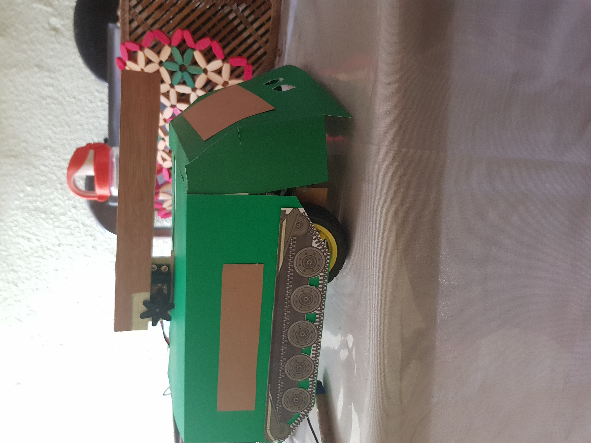

Home

Proyecto 2
usacTank 2099
Prototipo de mini-tanque que cuenta con las funciones básicas de
evitar, atacar y desplazarse de forma automática por al menos 25 minutos, reconociendo
límites y obstáculos, tomando la ruta más adecuada. Durante su recorrido, logra almacenar una bitácora y tiene la capacidad de “disparar” durante su viaje. Los datos
recolectados serán consultados y analizados.
Integrantes del Grupo 2
 Sergio Lenin Gonzalez Solis
Julio Roberto García Escalante
José Pablo Colindres Orellana
Carlos Manuel García Escalante
Sergio Lenin Gonzalez Solis
Julio Roberto García Escalante
José Pablo Colindres Orellana
Carlos Manuel García Escalante